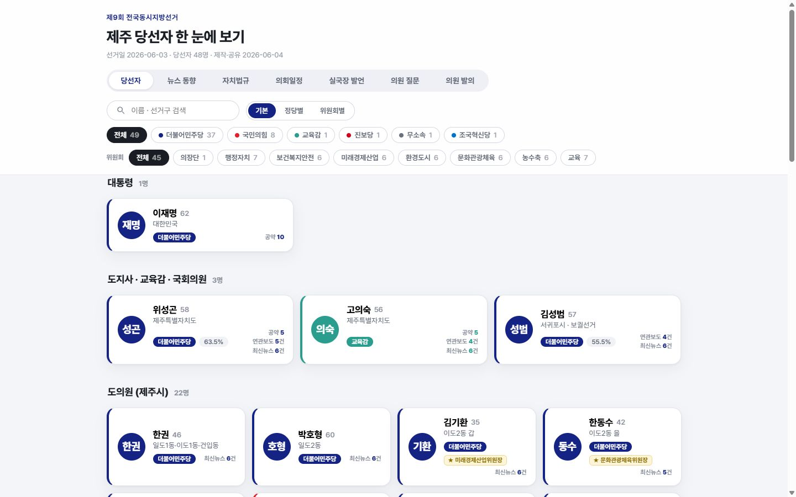

NEXT · 확장하면 이런 것도
오늘은 보고서 1장.
오늘은 보고서 1장.
키우면 매일 스스로 갱신되는 대시보드.
선거 다음 날인 2026. 6. 4. AI 코딩 에이전트와 하루 만에 골격을 만들고, 4개월 동안 탭을 하나씩 늘린 개인 프로젝트입니다. 당선자 공약, 도청 보도자료, 자치법규, 도의회 일정·회의록·의안을 한 화면에서 봅니다.
사이트 열어 보기 ↗ 만든 과정 따라가기 ↓
1일첫 배포까지 (6. 4.)
7개탭 (당선자~의원 발의)
15,761건도청 보도자료 수집 (첫날)
1,731건자치법규 전문 (10. 18. 기준)
500커밋 (사람 148 · 자동 318)
31PR 병합
만든 과정 따라가기 — 날짜를 누르면 그때 AI에게 시킨 일과 결과 화면이 나와요 (← → 키로 이동)
사람은 줄고, 자동은 남는다 — 월별 커밋 수 (병합 커밋 제외)
6월
7월
8월
9월
10월 (21일까지)
사람이 시킨 작업자동 갱신 (매일 수집·커밋)
6~7월에 기능을 만들고 나면, 이후엔 작업 스케줄러가 매일 수집 → 커밋 → 배포합니다. GitHub에 쌓인 커밋이 곧 운영 기록입니다.
오늘 배운 세 가지가 그대로 쓰였다
Tool Calling
"보도자료를 부서별로 모아줘" → AI가 크롤러 스크립트를 쓰고, 직접 실행하고, 결과를 확인하는 루프.
오늘: parse → lint → generate → render
규모만 다를 뿐 같은 생각 → 행동 → 관찰 반복입니다.
MCP · kordoc
7. 10. 도의회 의사일정 HWP 첨부를 kordoc으로 파싱해 위원회별 세부 안건을 표시.
오늘: 강의 pptx를 kordoc으로 읽고 HWPX 생성
한글 문서가 막히던 자리를 도구 하나가 열어 줍니다.
GitHub
커밋 500개 · PR 31개로 모든 변경이 남고, GitHub Pages로 무료 공개, 자동 갱신 결과도 커밋으로 기록.
오늘: 이 시연 페이지도 GitHub Pages
저장소가 기억이자 배포 창구입니다.
다음 시간 예고 (후보)
① 자료를 모으는 AI공개 사이트의 보도자료·법령·회의록을 크롤러로 모아 파일로 쌓기
② 화면으로 보여 주는 AI모은 자료를 검색·필터가 되는 대시보드로 만들고 GitHub Pages에 배포
③ 알아서 굴러가게매일 갱신 자동화 + 실패해도 데이터를 망가뜨리지 않는 검증
※ 공개 사이트 화면과 저장소 이력(커밋 날짜·메시지·건수, 2026. 10. 21. 집계)을 바탕으로 정리했습니다. 소스 저장소는 비공개입니다. 사이트는 공공기관의 공식 서비스가 아닌 개인 비영리 참고용 페이지입니다.